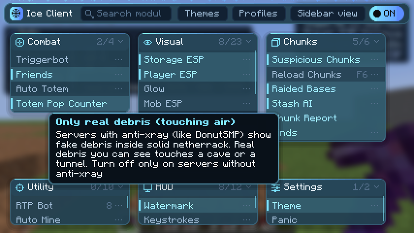
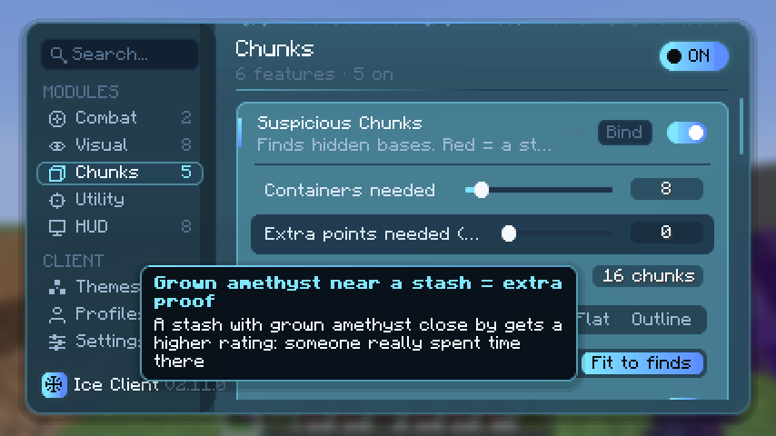
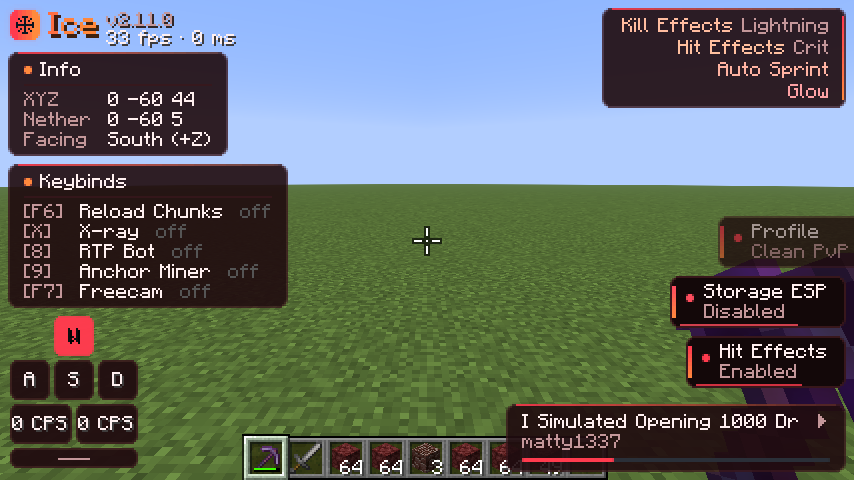

Ice Client scans every chunk around you for hidden stashes, rates how real each one looks, and skips the ones that are already raided. It also comes with clean menus, ready-made profiles and a custom HUD.

Built for big survival servers, and it works with anti-xray servers like DonutSMP.
Highlights chunks packed with chests, barrels, hoppers and shulkers. Red means somebody built something there.
Rates each find from 0 to 100%. Grown amethyst nearby counts as extra proof, because someone spent real time there.
Spots raided bases from visitor signs, lava and empty opened chests, then greys them out so you don't waste the trip.
Outlines chests, shulkers and players, with tracers, glow and distance tags you can change.
Finds ancient debris and ignores the fake debris anti-xray hides inside solid netherrack.
One key reloads every chunk, resets the ESP and rescans the whole area at full speed.
Switch between Stash Hunting, Clean PvP, Showcase or Minimal in one click, or save your own.
Coordinates with Nether conversion, a keybind list, keystrokes and CPS, notifications and the song you're playing.
Hover over any setting and it tells you, in plain words, what it does.
Press F4 to open the menu. Search any feature, set it up on its own page, and pick from 11 themes, including Ice, Ocean, Sakura, Blood and Void.


Pick the file for your Minecraft version. It's free and needs Fabric Loader plus Fabric API.
.jar into your .minecraft/mods folder.Get updates first, ask for help and share your finds.